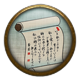

Battle List
The battle list has the options needed to set up or join any type of multiplayer battle. Select the host battle option to set up your own battle. You can also search the available battles hosted by other players. All lists can be filtered and sorted as you wish. Battle list battles will not contribute to the leaderboards or clan competition but will allow the upgrading of your avatar, the exploration of provinces and all other avatar progression.
Click here to view a video tutorial about this subject.